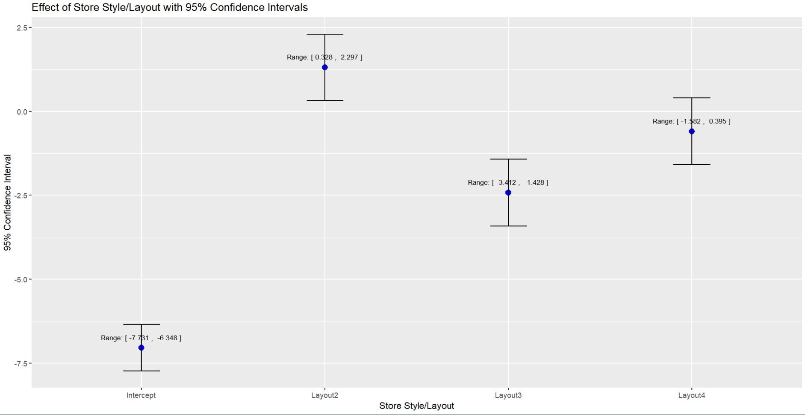

Analysis on big ticket sales data for a global retail company
A global retail company specialising in luxury goods employs over 10,000 sales staff across a number of stores internationally in Asia, Europe, South-America, and the United States. Business is very good, however, the company is looking to improve their sales of big ticket luxury items (defined as single item sales exceeding $10,000.00) with a view to expand their business moreinto this space. Due to record profits in the previous financial year, CEO would like to re-invest asubstantial portion of this profit toward this expansion plan.
A statistical analysis is conducted to understand the factors that influence sales counts. The CEO is interested in determining which variables have a significant impact on sales and how well sales can be predicted on these variables. In this analysis, generalised linear models (GLM) will be used to model the relationship, specifically between:
- Sales and the four major style/layouts stores across to identify the international standard.
- Review proposals: staff experience level with big ticket sales is more important than store layout.
Queries:
Of the four major style/layouts across your stores, which one would you recommend become the international standard for your company, based solely on big ticket item sales performance in the past year?
Does the available data support the assertion that the staff experience level with big ticket sales is more important than store layout?